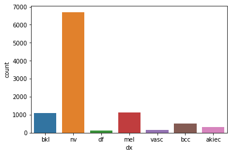

Skin Lesion Image Classification with Deep Convolutional Neural Networks
Introduction
In this post we will show how to do skin lesion image classification with deep neural networks. It is an image classifier trained on the HAM10000 dataset, the same problem in the International Skin Imaging Collaboration (ISIC) 2018 challenge task3.
The solution in this post is mainly based on some web posts and methods from the ISIC2018 leadboard.
The classification neural network model is tested with pretrained ResNet and DenseNet and implemented with PyTOrch. The model with the highest mean of recalls (0.9369 on 20% test set) is a ensemble of ImageNet pretrained and fine-tuned DenseNet161 + ResNet152.
# Confusion matrix of the mdoel with the best recall
from IPython.display import Image
Image('test_results/ensemble_dense161_6_res152_4_lesion/confusion_matrix.png', width=900)

Here below we go through the process how I worked on this problem.
A look at the data
Before diving into the models and metrics, we need to firstly have a look at the dataset.
import pandas as pd
df = pd.read_csv('data/HAM10000_metadata.csv', index_col='image_id')
df.head()
.dataframe tbody tr th {
vertical-align: top;
}
.dataframe thead th {
text-align: right;
}
import seaborn as sns
sns.countplot(df['dx'])
<matplotlib.axes._subplots.AxesSubplot at 0x126f39eb8>

pd.DataFrame({'counts':df['dx'].value_counts(), 'percent': df['dx'].value_counts() / len(df)})
.dataframe tbody tr th {
vertical-align: top;
}
.dataframe thead th {
text-align: right;
}
We can see that the samples for each class are very imbalanced. The class melanocytic nevi (nv) has about 67% of the dataset. The most minority class has only about 1% of the dataset.
When we organize the rows by lesion_id, we can see that many lesions have more than 1 images. The description of ham10000 says the dataset includes lesions with multiple images, which can be tracked by the lesion_id column.
dfr=df.reset_index(col_level='lesion_id').set_index(['lesion_id','image_id'])
dfr.head(10)
.dataframe tbody tr th {
vertical-align: top;
}
.dataframe thead th {
text-align: right;
}
import matplotlib.pyplot as plt
import matplotlib.image as mpimg
from matplotlib import rcParams
%matplotlib inline
# figure size in inches optional
rcParams['figure.figsize'] = 10 ,5
def plot_by_lesion():
grouped = df.groupby(['lesion_id'])
lesions = []
for i, lesion in enumerate(grouped):
cnt = len(lesion[1].index)
if cnt > 1:
fig, axes = plt.subplots(1, cnt)
for ax, name in zip(axes, lesion[1].index):
img = mpimg.imread(f'data/{name}.jpg')
ax.imshow(img)
if i > 4:
break
plot_by_lesion()


We can seee that the multiple images capture the same lesion with differences in color, scaling, orientation.
Now let’s count the images by lesion_id.
df['lesion_id'].nunique()
7470
cnt = df.groupby('dx')['lesion_id'].nunique()
per = df.groupby('dx')['lesion_id'].nunique().div(df['lesion_id'].nunique())
pd.DataFrame({'counts':cnt, 'percent': per})
.dataframe tbody tr th {
vertical-align: top;
}
.dataframe thead th {
text-align: right;
}
Now we see there’re 7470 unique lesions there, and the class imbalance got evern worse when we group them by lesion_id. We need to keep this in mind for the later actions like sampling and choosing evaluation metrics.
Metrics
For classfication problem, the commonly used metrics are Precision/Recall/F-measures, ROC_AUC, Accuracy Score (ACC) and so on. But for this imbalanced dataset, we need to think more on the choice of metrics.
In the ISIC 2018 challenge report, it mentioned that
Use of balanced accuracy is critical to select the best unbiased classifier, rather than one that overfits to arbitrary dataset prevalence, as is the case with accuracy.
Based on the description, it’s the class-wise mean of recall. The recall_score(average='macro') in scikit-learn just calculates this score:
$$ \frac{1}{|L|} \sum_{l \in L} R \left( y_{l}, \hat{y}_{l} \right) $$
The more details of the Balanced Multiclass Accuracy can refer to
- description from the tooltip on the ISIC 2018 leaderboard webpage.
- an explanation on the ISIC discussion forum.
- description on ISIC 2019 introduction.
So we’ll use the balanced accuracy (BACC) or mean of recalls of the 7 classes as the main metric for this assignment.
The mean reason is that this is a very imbalanced dataset, it is a big problem we need to handel carefully. For this multiclass classification with very imbalanced dataset:
- It’s important for the model to have good performance on all the classes, other than a few majority classes. The different classes have equal importance.
- Mean recall is good because it counts the model’s classification performance on all the classes equally, no matter how many samples belong to a class.
- So global accuracy score, micro average of recalls or so are not good metrics to measure the performance in this case.
And this is a medical diagnosis, it’s important to have a high true positive rate (to minimize the false negatives), so it’s better to focus more on recall over precision.
But we’ll also use other metrics togher to have more insights. A confusion matrix plot is also a good way to present how does the model performed for each class. One of the metrics that is also good for a imbalanced classification is Matthews correlation coefficient (MCC), it ranges between −1 to 1
- 1 score shows a perfect prediction
- 0 equals to the random prediction
- −1 indicates total disagreement between predicted scores and true labels’ values
$$m c c=\frac{t p \cdot t n-f p \cdot f n}{\sqrt{(t p+f p) \cdot(t p+f n) \cdot(t n+f p) \cdot(t n+f n)}} $$
Preprocess dataset
Sampling
Since the dataset is very imbalanced, so even though we could use the mean recall and loss function with class weights, it would be still troublesome to train the model for the under-represented minority classes. And the under-represented classes are likely to be missing or very few samples in a subsample or split, especially when the fraction is small. So we need to do something for the train-validation-test set sampling and split.
2 methods were applied to deal with the problem, with the assumption that new data follow a close imbalanced distribution as the labelled dataset.
- Subsampling based on the classes distribution of all the samples. So a small fraction train, validation or set will still have the same distribution of different classes.
- Oversampling training set for the under-represented classess (with random transformations) to equalize the distribution. Since the dataset is considered small so we will use oversampling on the minority classes other than undersampling on the majority classes.
For simplicity, I’ll just use the first image of each lesion_id. The code snippet below processes the dataset with oversampling. The parameter over_rate controls how much to over sample the minority classes.
import functools
exclude_set = []
weighted = True
imbalance_eq = True
remove_dup_img = True
over_rate = 4
train_fraction = 0.8
val_fraction = 0.2
meta_data = pd.read_csv('data/HAM10000_metadata.csv', index_col='image_id')
# for reproducibility, just keep 1st image of each lesion_id
if remove_dup_img:
lesion_ids = []
for index, row in meta_data.iterrows():
if row['lesion_id'] not in lesion_ids:
lesion_ids.append(row['lesion_id'])
else:
meta_data = meta_data.drop(index=index)
if len(exclude_set) > 0:
meta_data = meta_data.drop(index=exclude_set)
image_ids = meta_data.index.tolist()
num_images = len(image_ids)
num_train_ids = int(num_images * train_fraction)
num_val_ids = int(num_images * val_fraction)
# sampling based on the distribution of classees
if weighted:
size_total = num_train_ids + num_val_ids
df_c = meta_data['dx'].astype('category').value_counts()
weights = df_c / len(meta_data)
def sampling(df, replace=False, total=size_total):
return df.sample(n=int(weights[df.name] * total), replace=replace)
train_val = meta_data.groupby('dx', as_index=False).apply(
sampling).reset_index(0, drop=True)
train_sampling = functools.partial(sampling, total=num_train_ids)
train = train_val.groupby('dx', as_index=False).apply(
train_sampling).reset_index(0, drop=True)
val = train_val.drop(index=train.index)
if imbalance_eq:
bal_rate = 1 / weights / over_rate
for k, v in bal_rate.to_dict().items():
if v > 2:
train = train.append(
[train.loc[train['dx'] == k, :]] * int(v),
ignore_index=False)
sns.countplot(train['dx'])
<matplotlib.axes._subplots.AxesSubplot at 0x12738aa58>
Fractions of the entire set is splitted as below:
- training 0.64 (0.8*0.8)
- validation 0.16 (0.8*0.2)
- testing 0.2 (the same set for all the experiments)
Loss function
Cross Entropy Loss function will be used. As for this multiclass classification problem, I don’t have a good reason to use other loss functions over cross entropy.
On whether or not the loss criterion should also be weighted according to the imbalanced classes, I think it needs to be based on how we sample the training and validation set.
- If we sample the subsets as the sample distribution as the entire dataset, then we could use the weighted loss criterion so that it gives penalty to the majority classes.
- If we are to perform some sampling method like oversampling, it already gives some penalty to the majority classes, then I think we should use a loss criterion without weighted.
Data transformation
Some data transformations were performed to all the input images. It is performed according to the description in torchvision documentation for pre-trained models (as we will use these pre-trained models). It says Height and Width are expected to be at least 224, so we will resize all the input images into 224x224 to save some computation. We also normalize the iamges by the same mean and std as mentioned in the documentation.
# Transformation for validation and testing sets
transforms.Compose([
transforms.Resize(224),
transforms.CenterCrop(224),
transforms.ToTensor(),
transforms.Normalize(mean=[0.485, 0.456, 0.406],
std=[0.229, 0.224, 0.225])
])
As we oversampled minority classes in the training set, we should perform some random transformations, such as random horizontal-vertical flip, rotation and color jitter (saturation not used since I thought it might affect the preciseness of lesion area).
# Transformation for training set
transforms_train = transforms.Compose([
transforms.Resize(300),
transforms.RandomHorizontalFlip(0.5),
transforms.RandomVerticalFlip(0.5),
transforms.RandomRotation(20),
transforms.RandomResizedCrop(224),
transforms.ColorJitter(brightness=0.1, contrast=0.1, hue=0.1),
transforms.ToTensor(),
transforms.Normalize(mean=[0.485, 0.456, 0.406],
std=[0.229, 0.224, 0.225])
])
Models
When choosing a neural netowrk model for a certain task, we need to consider about several factors, e.g., the performance (accuracy) of a model, the appropriation of a model architecture for the task (in terms of pretrained model, the pretrained dataset should be more similar to the new task’s dataset), and computation efficiency.
For this assignment, we need to make a tradeoff between the performance and computation efficiency since I don’t have much of the computation resources.
Pre-trained models
By glancing through the methods in the ISIC2018 leadboard, most of the top methods used ensemble models of pre-trained models such as ResNet, Densenet, Inception and so on. There’re also methods used a single pre-trained model achieved a high rank.
And also as quoted from cs231n notes states that it’s now rarely people will train a network from scratch due to insufficient data size and expensiveness of training. It’s common to start from a model pre-trained on a very large dataset and use it as an initialization or a fixed feature extractor for a new task.
Therefore, we’ll start from a pre-trained model. As suggested in this post, ResNet-34 would be a good choice to start. So the initial plan was use the pre-trained ResNet model as a fixed feature extractor to see how it performs, and then try to “fine-tune” the weights of some layers.
However, after a few preliminary short-run experiments, I found it’s slow to train and the metrics didn’t show a potential improvement.
In Keres documentation there’s a table lists some stats like accuracy and number of parameters for some widely used models. As a tradeoff between accuracy and trainability (number of parameters), I started to focus more on the DenseNet161 and ResNet152.
After some preliminary experiments on using the networks as a feature extractor, which didn’t give a encouraging result, I decided to fine-tune the whole network.
Experiments
The experiments were early stopped when I think it might stop improving. Though it will possibly improve as the training continues, the time is precious.
Training and validation
DenseNet161
For the DenseNet161, the best validation mean of recalls is about 0.6845.
import torch
best_dense161_lesion = torch.load(
'experiments/dense161_eq3_exclutest_lesion_v1/model_best.pth.tar',
map_location=torch.device('cpu'))
recall_val_dense161_lesion = best_dense161_lesion['metrics']['recall']
recall_val_dense161_lesion
0.684509306993473
Image('experiments/dense161_eq3_exclutest_lesion_v1/confusion_matrix.png', width=900)
ResNet152
For the ResNet152, the best validation mean of recalls is about 0.7202.
best_res152_lesion = torch.load(
'experiments/res152_eq3_exclutest_lesion_v1/model_best.pth.tar',
map_location=torch.device('cpu'))
recall_val_res152_lesion = best_res152_lesion['metrics']['recall']
recall_val_res152_lesion
0.7202260074093291
Image('experiments/res152_eq3_exclutest_lesion_v1/recall.png', width=700)
import numpy as np
import matplotlib.pyplot as plt
def plot_metric(train_loss, test_loss, name, plot_type='loss'):
epochs = range(len(train_losses))
f = plt.figure()
plt.title(f"{name} {plot_type} plot")
plt.xlabel("epoch")
plt.ylabel(f"{plot_type}")
plt.grid(True)
plt.plot(epochs, train_loss, 'b', marker='o', label=f'train {plot_type}')
plt.plot(epochs, test_loss, 'r', marker='o', label=f'val {plot_type}')
plt.legend()
train_losses, test_losses = np.load(
'experiments/res152_eq3_exclutest_lesion_v1/final_results.npy')
plot_metric(train_losses, test_losses, 'ResNet152_lesion', 'loss')
# ResNet152 val
Image('experiments/res152_eq3_exclutest_lesion_v1/confusion_matrix.png', width=900)
As we can see from the results, it’s not a satisfactory performance for both the DenseNet161 and ResNet152 as they have only around 0.7 mean of recalls. No matter what, let’s have a look at how they perform on the test set.
Metrics on the test set
import os
import json
import numpy as np
import pandas as pd
from sklearn import metrics
test_results_path = 'test_results'
# model_ids =['dense161','res101','res152']
result_paths = [d for d in os.listdir(
test_results_path) if not d.startswith('.')]
result_paths = [d for d in result_paths if 'lesion' in d]
# print(result_paths)
model_metrics = {}
for i in result_paths:
fp = os.path.join(test_results_path, i, 'metrics_results.json')
y_true = np.load(os.path.join(test_results_path, i, 'val_true.npy'))
y_pred = np.load(os.path.join(test_results_path, i, 'val_pred.npy'))
with open(fp) as f:
rec = json.load(f)
rec['f1'] = metrics.f1_score(y_true, y_pred, average='macro')
rec['mcc'] = metrics.matthews_corrcoef(y_true, y_pred)
model_metrics[i] = rec
df_results_lesion = pd.read_json(json.dumps(model_metrics), orient='index').drop(
columns=['bacc']).sort_values(by='recall', ascending=False)
df_results_lesion['acc'] = df_results_lesion['acc'] / 100
df_results_lesion = df_results_lesion[['recall', 'prec', 'f1', 'mcc', 'acc']]
df_results_lesion.columns = ['Recall', 'Precision', 'F1', 'MCC', 'ACC']
df_results_lesion.loc[['dense161_lesion','res152_lesion']].round(4)
.dataframe tbody tr th {
vertical-align: top;
}
.dataframe thead th {
text-align: right;
}
The surperising result shows a much higher mean of recalls for both of the models on the test dataset, from around 0.7 to 0.9105 and 0.8594.
I also tested ensembles of the the trained models with different weights on each (though without grid search).
Besides pick the model when with the highest mean of recalls, I also used the DenseNet161 model with the highest MCC score during validation.
The results are also surprisingly good.
df_results_lesion.round(4)
.dataframe tbody tr th {
vertical-align: top;
}
.dataframe thead th {
text-align: right;
}
Image('test_results/dense161_lesion/confusion_matrix.png', width=900)
Image('test_results/dense161_lesion_mcc/confusion_matrix.png', width=900)
Image('test_results/ensemble_dense161_6_res152_4_lesion/confusion_matrix.png', width=900)

Image('test_results/res152_lesion/confusion_matrix.png', width=900)
However, I still doubt why the test metrics are much higher than when in validation (even higher than those deeply hacked top ranks in the ISIC 2018 challenge).
I’ve thought about and also discussed with others on the possible flaws in my solution. However, I couldn’t find a likely problem caused the very high mean of recalls on the tes tset. There’s no leakage of information from training set to test set, as I groupped and splitted the datasets according to the lesion_id.
You’re very welcomed to contact me if you have any idea.
Discussion of limitations and possible improvements
- Should use all the images for each lesion_id
- Could’ve train longer
- Sacrifice majority classes for the performance on the minority classes,
nvcould be better as the given data - The experiments were not well controled, no comparison on the performance when a single variable changed, such as
- the use of oversampling, fine-tune to get a balance
- different ways of training set transformations
- …
- Fine-tune hyper parameters
- Look into other variables in meta_data, if could be combined to improve the classification performance
- Input images of only lesion region, as semantic segmentation (the task 1 of ISIC 2018)
- Color constancy (mentioned in leadboard high-rank manuscript)
- Focal loss function (1 report mentioned smaller variance on accuracy)
- Get extra data
- Exploration of other models